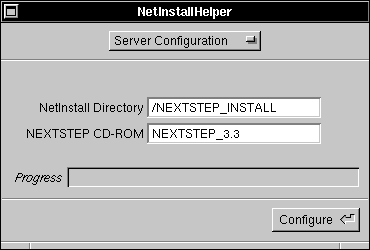
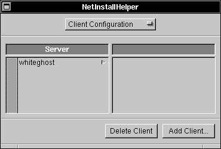
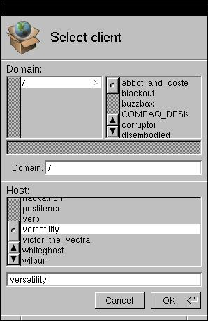
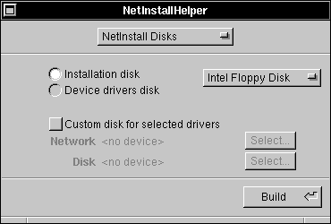
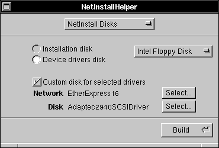
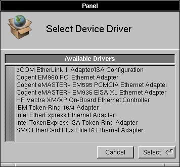

Release 3.3 Copyright ©1994 by NeXT Computer, Inc. All Rights Reserved.
| 3.3 Release Notes: Installing NEXTSTEP across a Network
This document describes how to set up and use Network Installation (NetInstall) for NEXTSTEP Release 3.3. The instructions assume your computer is an Intel-based PC. Specific notes will guide you if you are working with a NeXT computer. You can use NetInstallHelper to set up computers to provide NetInstall services, name target computers on which you want to install NEXTSTEP, and create the NetInstall floppy disks that are required to boot target computers from the network. As a convenience to larger sites that need fine-grained control over their network configurations, shell scripts for setting up servers, clients, and for making NetInstall floppy disks are provided in the /NextAdmin/NetInstallHelper.app directory. These are described below in the section "Using the shell scripts in /NextAdmin/NetInstallHelper.app." |
Using NetInstallHelper to set up servers and clients
| Setting up a NetInstall server |
| To use NetInstall, you must set up a NetInstall server on each subnet where you wish to install target (client) systems from the network. A computer running a NetInstall server stores an image of the entire NEXTSTEP Release 3.3 CD-ROM, so it will require enough free disk space to hold the CD-ROM image (approximately 300 megabytes). |
| 1. | Start up NetInstallHelper (located in /NextAdmin) on the computer you want to provide the NetInstall services. The NetInstallHelper main window appears with a popup list. | |
| 2. | Select the Server Configuration panel. Specify the name of the NEXTSTEP Release CD-ROM and the name of a directory that you'd like to set up to hold an image of the CD-ROM. |
| The NEXTSTEP CD-ROM field must match the name of the CD-ROM. For NEXTSTEP Release 3.3, the correct name appears as the default value in this field.
 The NetInstall directory must be empty. If it doesn't exist yet, NetInstallHelper will create it for you. |
| 3. | Press the Configure button, and NetInstallHelper will transfer a copy of the CD-ROM to the NetInstall directory. This will take slightly longer than an hour on most computers. |
| In the NetInfo root domain NetInstallHelper creates a /locations/install_servers subdirectory that has a subdirectory named for the computer running the NetInstall server (e.g., /locations/install_servers/sirius). It also creates the clients and client_domains properties. |
| Setting up NetInstall clients |
| After you've set up a computer to provide NetInstall services, you can configure target (client) computers for that server. The clients must be on the server's subnet and must already have host entries in the /machines directory of the root NetInfo domain. |
| 1. | Start up NetInstallHelper. | |
| 2. | Select Client Configuration in the main window's pop-up list. |
| NetInstallHelper displays a list of computers that run NetInstall servers.
 |
| 3. | Choose a server for the client you wish to add, and press the Add Client button. The Select Client panel appears. |
|  |
| 4. | Choose the root domain. | |
| 5. | Click the hostname of the server to see its current list of clients. | |
| 6. | Choose client names from the list of hosts. The first time you use this the system will prompt you for the root password for the root domain. |
| To delete a client, select its name and click Delete Client (the NetInfo host entry for the selected client isn't deleted--only the NetInstall configuration information associated with that client is removed). |
| Setting up a new computer |
 Network doesn't recognize computer.
Network doesn't recognize computer.
 Enter host name:
Enter host name:
| Enter the name you've given to the new host. You'll see the message: |
 Name recognized. New CPU or network card? [y/n]?
Name recognized. New CPU or network card? [y/n]?
| Answer "y" and press return to proceed with network installation. |
| Building NetInstall floppy disks |
| To install NEXTSTEP on a target Intel-based PC computer from the network, you must boot the target computer using a special set of two floppy disks. The first is called the installation disk (containing the booter and kernel), and the second is the device drivers disk (containing SCSI or IDE and network device drivers).
You can create a boot floppy disk with NetInstallHelper. Note that to build a NetInstall floppy disk, the computer providing NetInstall services must be set up on the network. |
| 1. | Select the NetInstall Disks item in the NetInstallHelper main window's pop-up list. Don't put a floppy disk in until the system prompts you for it. |
|  |
| 2. | Choose the Installation Disk button and press the Build button. |
| NetInstallHelper will prompt you to insert a floppy disk--don't insert one until you are prompted to do so. It takes a few minutes to build a boot floppy disk. |
| 3. | Choose the Device Drivers Disk button and press the Build button. |
| It will take a few minutes to format and build the disk. If a second floppy disk is required to hold all the network and disk drivers available, you'll be prompted to remove the floppy disk and insert a new one. If you need to install drivers that were not included in the release, you must place a copy of these drivers in the /image_directory_name/private/Drivers/i386 directory.
The installation disk holds a copy of the operating system kernel and a few system files. When you boot a computer using an installation disk, these files are loaded, then you are asked to insert a floppy disk containing device drivers for the network and disk drives for your computer's hardware. |
| Building quick custom NetInstall floppy disks |
| If your network has many computers that have the same hardware configuration (at least the same network and disk controller cards), then you can simplify the NetInstall process by creating a set of custom floppy disks for that hardware configuration.
The floppy disks you create are different from the default disks--in particular, the installation disk skips the warning that the install process will destroy the contents of your hard disk. You can still opt not to continue, thus saving the contents of your disk. The custom device drivers disk contains only the hard disk and network drivers required for the target system rather than all drivers included in the release. Choose the "Custom disk for selected drivers" button, then press the Select buttons for both the network and disk drivers.  The system will present a Select Device Drivers panel.  Select the appropriate drivers from the list, then press the Build button. If you need device drivers not included in the release, you must already have copied them into the /image_directory_name/private/Drivers/i386 directory. |
| NeXT computers |
| Only a boot floppy disk is required for NetInstall on NeXT computers. To use the NeXT boot floppy, power up your NeXT computer and interrupt the normal startup sequence by pressing the right Command key or the Command bar and the tilde key (just above 7 on the number pad) as soon as the Testing System message disappears from the screen. Then enter the ROM Monitor command: |
 NeXT> bfd sdmach rootdev=en0
NeXT> bfd sdmach rootdev=en0
| You must build NetInstall floppy disks using a computer of the same type as the target computer. That is, you must use an Intel system to make NetInstall floppy disks for other Intel systems, and you must use a NeXT computer to make a NetInstall boot floppy disk (or magneto-optical disk) for a NeXT computer. |
Using the shell scripts in /NextAdmin/NetInstallHelper.app
| If your site requires that you set up a large number of NetInstall clients, or if you need to customize NetInstall configuration at your site, you can take advantage of the shell programs included in the NetInstallHelper.app directory. These program are not used by NetInstallHelper. You use these scripts as they are, or use them as starting points to write your own shell scripts to set up customized NetInstall procedures at your site. |
| Setting up a NetInstall server using the setup script |
| You must set up a NetInstall server on each subnet that will have NetInstall clients. The server must have enough free space available on a directly attached disk to hold an image of the NEXTSTEP 3.3 release CD-ROM (approximately 300 megabytes). The server must have a CD-ROM drive attached, and you must have the NEXTSTEP 3.3 CD-ROM disk available.
To set up the server, start up /NextApps/Terminal.app, and run the command: |
 setup_netinstall_server
setup_netinstall_server
| If the NEXTSTEP Release 3.3 CD-ROM disk isn't already in the CD-ROM drive, you'll be prompted to insert it. By default, an image of the CD-ROM disk will be copied to the directory named /NEXTSTEP_INSTALL. If you wish to have the CD-ROM image placed in a different directory, you can specify its name following the -image option to the setup program: |
 setup_netinstall_server -image /DirectoryName
setup_netinstall_server -image /DirectoryName
| The directory must be empty or nonexistent.
If you are setting up a NetInstall server using a custom CD-ROM, you can specify the CD-ROM name when you run the setup program: |
 setup_netinstall_server -cdrom /CDName
setup_netinstall_server -cdrom /CDName
| You can use the -image and -cdrom options together. |
| Setting up a NetInstall client using the setup script |
| A NetInstall client requires a NetInstall server on the same subnet. To enable NetInstall for a client, run the client setup program: |
 setup_netinstall_client -client hostname -server hostname -domain name
setup_netinstall_client -client hostname -server hostname -domain name
| You must provide the client's name, the server's name, and the name of the client's parent NetInfo domain. A host entry must already exist for the client in its parent NetInfo domain. If you are setting up a new computer and wish to use NetInstall, follow the instructions in the section "Manually Adding a New Host" in the Network and System Administration manual first. If you don't know the new computer's hardware address, set it to "0:0:0:0:0:0". When you boot the NetInstall client for the first time, it will display the message: |
 Network doesn't recognize computer.
Network doesn't recognize computer.
 Enter host name:
Enter host name:
| Enter the name you've given to the new host. You'll see the message: |
 Name recognized. New CPU or network card? [y/n]?
Name recognized. New CPU or network card? [y/n]?
| Answer "y" and press Return to proceed with network installation.
To install NEXTSTEP software over the network, you'll need a NetInstall floppy disk and a drivers floppy disk that contains device drivers for the network and disk controllers in the client computer. Boot the computer using the NetInstall disk. Insert the disk containing the device drivers when you are prompted, and follow the instructions that appear on the screen. |
| Creating a NetInstall floppy and a Drivers floppy using the floppy-builder script |
| You can create a NetInstall floppy disk or a drivers floppy disk with the make_netinstall_floppy program. To create a NetInstall (boot) floppy disk, run the program: |
 make_netinstall_floppy
make_netinstall_floppy
| Don't insert a floppy disk in the drive until you are prompted. The program will format the disk and create all the necessary files on the disk. If you wish to skip the formatting step, you can use the -n flag: |
 make_netinstall_floppy -n
make_netinstall_floppy -n
| If you plan to use NetInstall to load software on many clients that have the same network and disk controllers, you can create a custom NetInstall floppy disk that specifies those devices. When you boot your client computer using this custom NetInstall floppy disk, it will automatically load the network and disk drivers from the Drivers floppy disk. This saves you time and makes the installation process simpler. To create a custom NetInstall floppy disk, you must specify the names of the network and disk drivers following the -c option: |
 make_netinstall_floppy -c network disk
make_netinstall_floppy -c network disk
| For example, to create a custom floppy disk for a NetInstall client that uses an EtherExpress16 network card and an Adaptec1542B SCSI card, run the command: |
 make_netinstall_floppy -c EtherExpress16 Adaptec1542B
make_netinstall_floppy -c EtherExpress16 Adaptec1542B
| To create a drivers floppy disk, specify the -d flag when you run the program: |
 make_netinstall_floppy -d
make_netinstall_floppy -d
| The program will locate all network and disk drivers available on your system, and ask you which ones you'd like to copy to the floppy disk. If there isn't enough room on a single disk, you'll be prompted to insert a new floppy disk when the first disk is full.
If you want to create a drivers floppy with only a pair of drivers, one for a network card and one for a disk controller, corresponding to a custom NetInstall floppy disk, then you can specify both the -c and -d flags when you run the program: |
 make_netinstall_floppy -d -c EtherExpress16 Adaptec1542B
make_netinstall_floppy -d -c EtherExpress16 Adaptec1542B